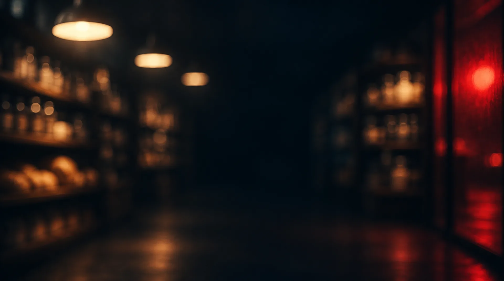
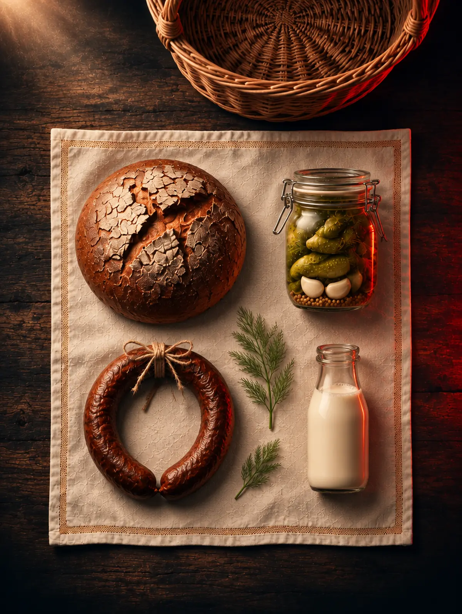

chleb i wypiekichleb.brood & gebak.
Donker roggebrood op zuurdesem, lichte bolletjes voor het ontbijt, en bij feestdagen zoet gebak met maanzaad of kwark. Brood is de basis van bijna elke Poolse maaltijd, van śniadanie tot kolacja.
te bevestigen

Van chleb tot spiżarnia: dit zijn de productgroepen die in een Poolse keuken niet mogen ontbreken. Wat Warta precies verkoopt, bevestigen we nog met de winkel — bel gerust om het te vragen.
Sfeerbeeld — geen weergave van het actuele assortiment.
Schuif door het lint. Elk Pools woord staat voor een groep producten die in veel Poolse huishoudens dagelijks op tafel komt.
Donker roggebrood op zuurdesem, lichte bolletjes voor het ontbijt, en bij feestdagen zoet gebak met maanzaad of kwark. Brood is de basis van bijna elke Poolse maaltijd, van śniadanie tot kolacja.
te bevestigenTwaróg, de witte verse kaas die je op brood smeert of door pierogi mengt. Zure room voor soepen en sauzen, kefir om te drinken. Zuivel is in de Poolse keuken vaak net wat zuurder en voller dan je gewend bent.
te bevestigenGerookte worst, ham en spek: in Polen is roken een vak. Kiełbasa gaat op brood, in de soep of op de grill, en hoort bij bijna elk feest — van een gewone zondag tot de mand van de święconka.
te bevestigenOgórki kiszone, zuurkool, rode biet, jam en ingemaakte paddenstoelen. De voorraadkast is het hart van een Poolse keuken: alles wat in glas bewaard wordt, smaakt naar thuis.
te bevestigenChocolade, wafels, peperkoek en snoepjes die je kent uit je jeugd. Zoetigheid is in Polen iets om te delen: bij de koffie, bij bezoek of gewoon na het eten.
te bevestigenVan vruchtensap en mineraalwater tot de dranken die bij een Poolse tafel horen. Welke dranken Warta verkoopt, vullen we aan zodra de winkel het bevestigt.
te bevestigenTik op een groep en hij valt in de mand. Kopieer je lijst, print hem uit of bel de winkel om te vragen of alles er is. Geen bestelling, geen account — gewoon een lijstje voor onderweg.
Productgroepen zijn voorbeelden en nog niet bevestigd door de winkel.
Een klein Pools woordenboekje voor in de winkel. Tik op een woord en zie de Nederlandse betekenis.
Uitspraak is een benadering voor Nederlandse lezers.
Op deze plek komen foto's van de echte schappen van Warta. De beelden op deze pagina zijn sfeerbeelden en laten niet het actuele assortiment zien.
[FOTO'S WINKEL TE BEVESTIGEN]
Stationsstraat 126, Waalwijk — bel 0416 203 437 of loop even binnen.
Sfeerbeeld — geen weergave van het actuele assortiment.